Tem sido um ano calmo. O Capitão Pátria está controlado. Bruto trabalha para o governo, supervisionado por ninguém menos que o Hughie, mas os dois estão loucos para trocar essa paz e tranquilidade por briga e confusão. Então, quando os Boys ficam sabendo de uma misteriosa arma Anti-Herói, eles enfrentam os Sete e partem pra briga, enquanto investigam a lenda do primeiro super-herói: o Soldier Boy.
Assitir
Episódio 7